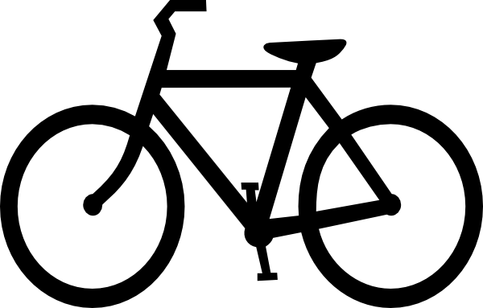

I have been scuba certified since the summer of 2014. I have scuba diving in Hawaii, Cayman Islands, Curaçao, and Mexico. The coolest thing I have seen while diving is either a seahorse or tons a turtles. I love diving with my family, you can see a whole different world below the water.

I have been running since 5th grade. My 3k time is around 11:50 and my 5k time is 19:41. I have done a two 6 miles races with my sister. On May 18, I will be running my first half marathon. I am excited to see how I will do in longer distance race.

I have taken apart mostly electronics. Watches, a speaker, and a 2005 desktop monitor are a few of the items I have taken fully apart. I like taking things apart and figuring out how everything works together. I always take apart things that do not work properly, that way I do not have to worry about putting the item back together.

I have been skiing twice in Colorado. I am confident one greens and am growing to like blue routes. I have done a few black routes but not that many. I do not fully know how to do mougles. I think the next time I go skiing with my family, I should try learning how.

I have been to many place in the United States: Florida, Texas, Colorado, Hawaii and Alaska just to name a few. I also love to travel outside the country, the countries I have been to are: Cayman Islands, Curaçao, and Mexico.
I love biking with my cousins and family. I like riding on trials the best because when you get to the top of a really tall hill, you get a nice view of below; plus it is more challenging.
